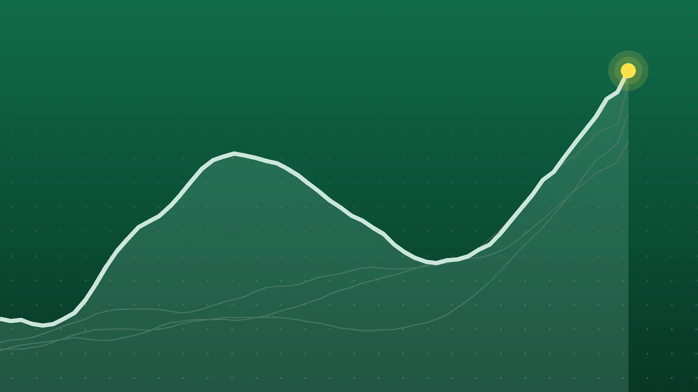

SportsExplainer
Como vs. Manchester United: Como Rout United 4-1 in Champions League
Nico Paz scored twice as Cesc Fàbregas’ side took apart a United team now winless in seven. The loss leaves United with three points from three league-phase games.

Quick take
- Como beat Manchester United 4-1 at the Stadio Giuseppe Sinigaglia on Oct. 21, with Nico Paz scoring in the 2nd and 57th minutes.
- Tasos Douvikas and Jacobo Ramón also scored for Como; Joshua Zirkzee got United’s goal in stoppage time.
- United are winless in seven games in all competitions and have three points from three Champions League games, per Sky Sports.
- United host Bournemouth in the Premier League on Sunday, Oct. 25.
Why it's trending Como beat Manchester United 4-1 on Wednesday, Oct. 21, in the third round of the Champions League league phase, and searches for the score and standings spiked.
What happened
Como vs. Manchester United turned into one of the results of the Champions League season so far. The Italian club won 4-1 at its lakeside home, the Stadio Giuseppe Sinigaglia, on Wednesday, Oct. 21, in the third round of the league phase, according to Sky Sports.
Nico Paz set the tone almost immediately, curling a left-footed shot into the top corner in the second minute. He added a second after the break, and Tasos Douvikas and Jacobo Ramón also scored. Joshua Zirkzee’s goal in stoppage time was the only thing United had to show for the night.
For Michael Carrick’s team, the loss stretched a winless run to seven games across all competitions. VAVEL called it a “historic victory” for Cesc Fàbregas’ Como.
How the goals came
| Minute | Score | Goal |
|---|---|---|
| 2 | 1-0 | Nico Paz curls a shot into the top corner after Harry Maguire gives him room |
| 49 | 2-0 | Tasos Douvikas finishes after Paz sets him up |
| 57 | 3-0 | Paz goes on a solo run after a Carlos Baleba mistake in United’s half |
| 76 | 4-0 | Jacobo Ramón heads in |
| 90+1 | 4-1 | Joshua Zirkzee controls an Amad cross and scores |
Minute marks follow Sky Sports’ report; some live feeds logged the first two goals a minute apart from these times.
The numbers behind the rout
Como controlled the game long before the second-half goals. In the first half alone, Como had 62% of the ball, six shots to United’s three and four shots on target to United’s none, according to VAVEL. Como completed 417 passes in that half, compared with 240 for United, and committed just two fouls to United’s nine.
A few other details from the night:
- A young star’s big game. Paz, 22, became the second-youngest South American to score against United in the Champions League, behind only Lionel Messi in the 2009 final, according to Opta data cited by TNT Sports.
- Slow starts. United are the first English side to concede in the opening two minutes of back-to-back major European matches. They gave up a goal in the first minute at Atlético Madrid, then in the second minute at Como.
- A long-awaited return. Matthijs de Ligt, sidelined by back trouble, started a game for the first time in 325 days, Sky Sports reports. He came off in the 78th minute.
- Discipline. United picked up three yellow cards to Como’s one. Nobody was sent off.
Why everyone is talking about it
Part of it is simply the gap in reputation. United have won the European Cup three times, in 1968, 1999 and 2008, while Como have no such history on this stage. Seeing the Italians win this comfortably was a shock to many fans, and it drove a huge spike in searches for the score and standings.
The other part is the pressure on United. Sky Sports reports the team has one goal involvement from captain Bruno Fernandes in his last nine appearances, and the mood after the game was tense.
Carrick said he was “really angry” and told reporters, “For us to play in that way is not acceptable,” according to a second Sky Sports report. He questioned the players’ intensity and their effort tracking back.
Fernandes pointed elsewhere. He said the staff had chosen not to press man to man and that responsibility for that plan sat with the manager and his coaches. Those competing explanations, from the captain and the manager on the same night, add to the questions around Carrick.
What it means for the standings
In the current Champions League format, each of the 36 teams plays eight games in a single league table. The top eight go straight to the round of 16, teams ranked ninth to 24th go into a playoff round, and the rest are eliminated.
United now have three points from three games, which works out to one win and two losses, with the defeats coming at Atlético Madrid and Como. With five games left, there is time to recover, but 112.ua described the result as a major setback for United and a big boost to Como’s hopes of reaching the knockout rounds.
What happens next
- United vs. Bournemouth, Sunday, Oct. 25. United return to the Premier League at home, per Sky Sports. Another poor result would extend the winless run to eight.
- Carrick’s position. Watch how the club responds to the public split between the manager and his captain.
- Como’s push. With a win this big, Fàbregas’ side will look to build on it in the second half of the league phase.
Quick answers
What was the score between Como and Manchester United?
Como won 4-1 on Oct. 21, 2026. Nico Paz scored twice, Tasos Douvikas and Jacobo Ramón added goals, and Joshua Zirkzee scored for United.
Who is Como’s manager?
Former Spain, Arsenal, Barcelona and Chelsea midfielder Cesc Fàbregas coaches Como.
How many points do Manchester United have in the Champions League?
Three points from three league-phase games, according to Sky Sports, after a win and two defeats.
Sources
- Sky Sports Como 4-1 Man Utd: Michael Carrick's side ripped apart in Italy during Champions League hammeringOct. 21, 2026
- Sky Sports Manchester United: Bruno Fernandes criticises coaches as Michael Carrick questions players after Champions League loss to ComoOct. 21, 2026
- VAVEL USA Highlights and Goals of Como 4-1 Manchester United in 2026-27 UEFA Champions LeagueOct. 21, 2026
- TNT Sports Como 4-1 Manchester United live commentaryOct. 21, 2026
- 112.ua Como thrashes Manchester United 4-1 in Champions League 2026/27Oct. 21, 2026
Keep reading

NZ vs IND 1st T20I: India Chase 226 in a Record Win
India beat New Zealand by four wickets in the 1st T20I on Oct. 22, chasing 226, their highest successful T20I chase. Scores, key players and what’s next.

NBA Opening Night: Pistons Erase 22-Point Hole to Beat Celtics
The 2026-27 NBA season opened with Detroit rallying past Boston 121-113 despite Paul George’s 38. Recap, tonight’s games and key dates for the season.

World Series 2026: Rays vs. Brewers Set, Game 1 Is Oct. 23
World Series 2026 is Rays vs. Brewers, two teams that have never won a title. The schedule, TV channel, how each got here and what to watch.